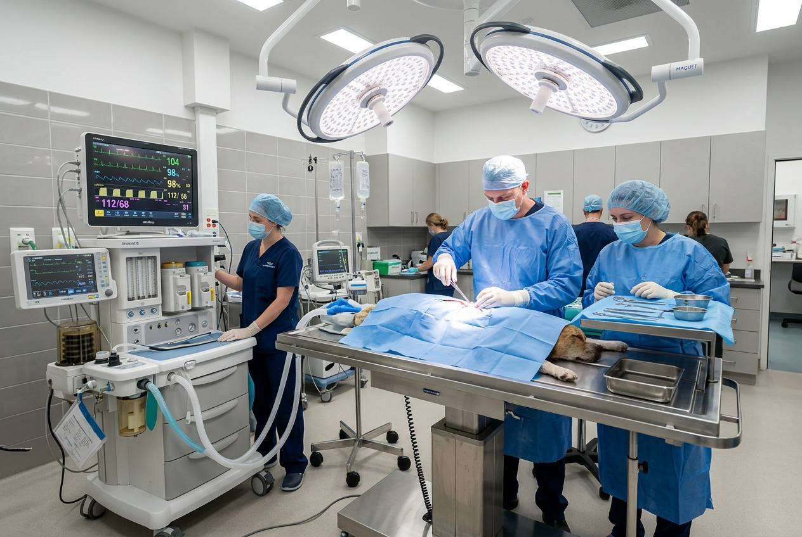
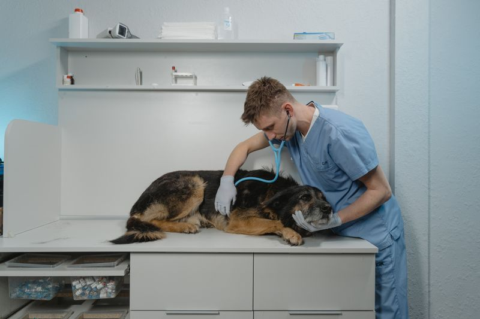
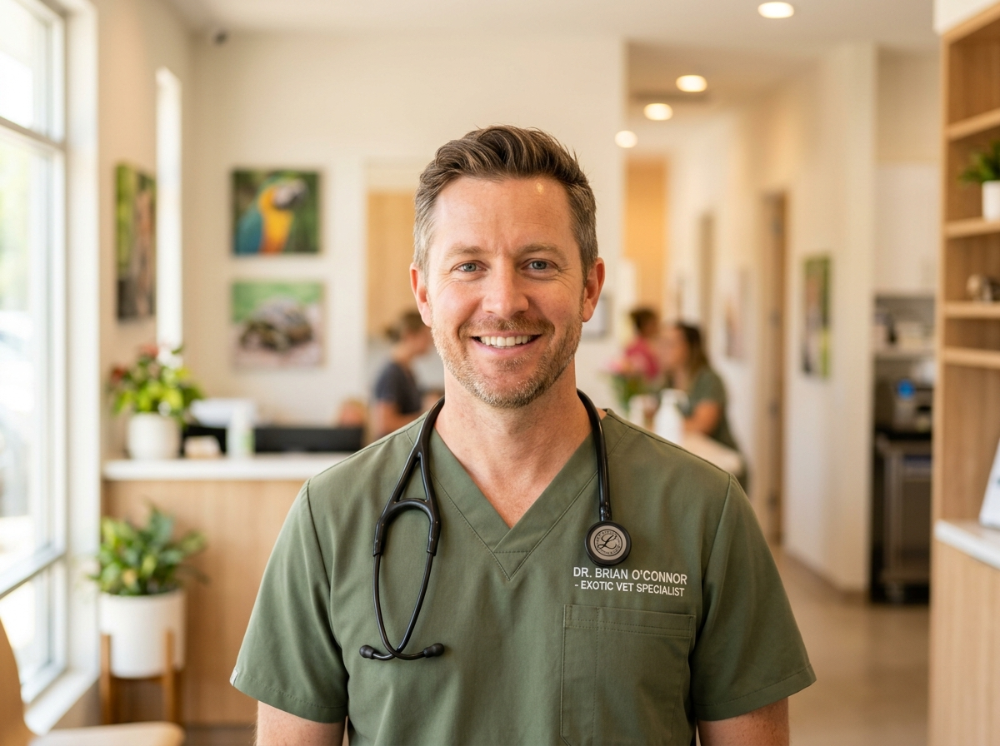
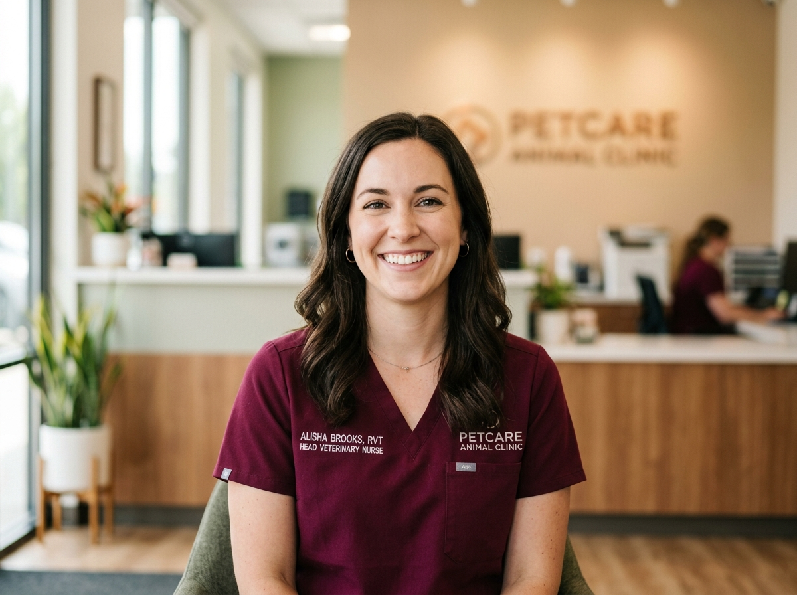
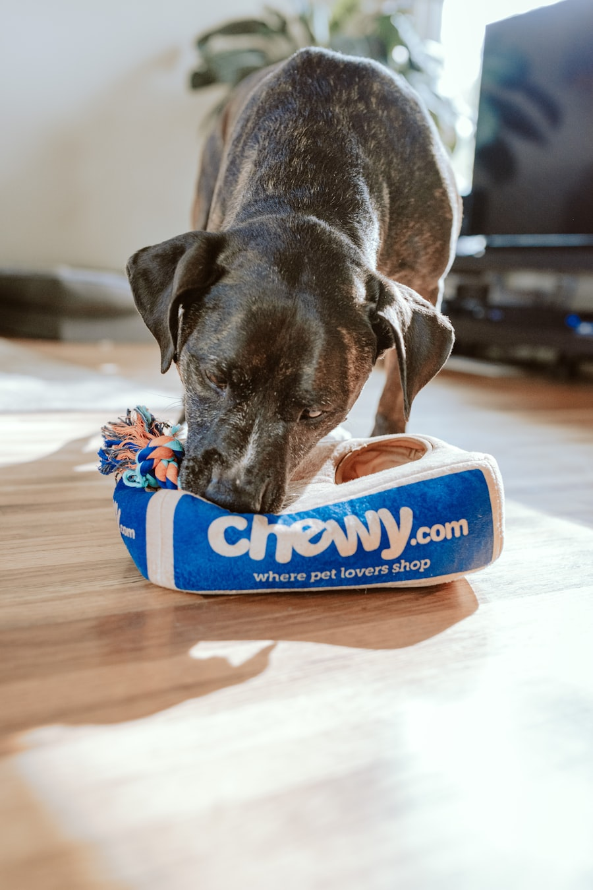
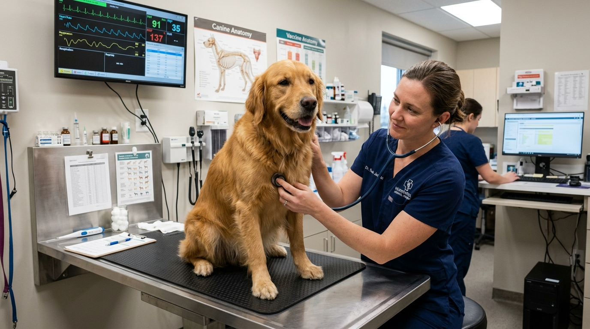

Comprehensive Veterinary Medicine, Surgery & Clinical Care
From advanced diagnostic imaging and sterile surgical procedures to critical illness triage and preventive clinical medicine, our accredited veterinary medical team provides evidence-based healthcare for your companion.
Precision Medicine • Sterile Operating Suites
Our hospital is equipped with university-grade veterinary medical technology to accurately diagnose and treat acute and chronic animal health conditions.
Our Clinical Care & Diagnostic Pathway
Every patient admitted to our animal clinic undergoes a structured, evidence-based diagnostic protocol designed for accurate clinical evaluation and patient safety.
Triage & Physical Exam
Cardiac auscultation, respiratory rate, body temperature, mucosal color, and comprehensive nose-to-tail physiological evaluation by an attending clinician.
Point-of-Care Diagnostics
Rapid in-house blood chemistry, automated hematology, digital low-radiation radiography, and fine-needle cytology for immediate objective diagnosis.
Collaborative Treatment Plan
Your doctor explains findings, discusses diagnostic images, and outlines itemized therapeutic options without hidden fees before proceeding.
Discharge & Patient Portal
Clear digital medication instructions, post-treatment care plans, and instantaneous synchronization with your online pet health records portal.
Specialized Clinical Divisions & Surgical Suites
Our hospital houses dedicated clinical divisions equipped with sterile operating theatres, in-house pathology analyzers, and advanced dental operatory.

Surgery & Orthopedics
Positive-pressure surgical suites with continuous SurgiVet telemetry, laparoscopic spays, and complex orthopedic TPLO bone plate stabilization.
- TPLO cruciate ligament stabilization
- Laparoscopic minimally invasive surgery
- Soft tissue tumor resections & biopsies

Diagnostics & Digital X-Ray
Point-of-care automated pathology laboratory and high-frequency digital radiography delivering definitive test results within 15 minutes.
- 15-min Complete Blood Count (CBC)
- Sound-Eklin digital X-ray & tele-read
- Color Doppler abdominal ultrasound

Dental Operatory Suite
Complete Oral Health Assessment & Treatment (COHAT) including 360° intraoral radiography, ultrasonic scaling, and surgical extractions.
- High-definition intraoral digital dental X-rays
- Piezoelectric subgingival scaling
- Surgical extractions with regional nerve blocks

Internal Medicine & ICU
Advanced medical management of complex endocrine disorders, chronic renal disease, gastrointestinal pathology, and round-the-clock ICU care.
- Diabetes, thyroid & Cushing's regulation
- Renal staging & blood pressure telemetry
- Heated oxygen-enriched ICU hospitalization
Hospital Clinical Facilities & Sterile Standards
Engineered to human hospital-grade cleanliness standards with positive air filtration, continuous telemetry monitoring, and specialized treatment wards.
HEPA-Filtered Surgical Theatres
ISO Class 7 positive-pressure surgical rooms prevent airborne bacterial contamination during open-cavity and orthopedic operations.
Sound-Eklin Digital Radiology
Low-radiation digital radiography provides instantaneous sub-millimeter diagnostic images with cloud board-certified radiologist tele-reads.
Oxygen-Enriched ICU Kennels
Temperature and humidity controlled Snyder oxygen chambers provide continuous respiratory support for cardiac and pulmonary emergencies.
Automated Point-of-Care Lab
In-house hematology, serum chemistry, and blood gas analyzers deliver comprehensive laboratory panels in under 15 minutes.
Continuous Patient Telemetry
Multi-parameter SurgiVet monitors track ECG, pulse oximetry (SpO2), end-tidal CO2 capnography, and core temperature during all anesthesia.
24/7 Digital Patient Health Portal
Secure online access to view verified vaccination certificates, diagnostic test results, doctor notes, and online prescription refills.
Meet Our Veterinary Clinicians & Surgeons
Board-certified veterinary surgeons, internists, and licensed veterinary nurses dedicated to clinical excellence.

Dr. James Wilson
DVM, DABVP • 12 Years Clinical Practice
"Evidence-based preventive protocols, gentle fear-free handling, and continuous diagnostic triage form the bedrock of our hospital's clinical standard."
Dr. Sophia Martinez
DVM, DAVDC • 10 Years Specialized Practice
"Dental pathology represents the most widespread chronic infection in companion animals. We combine full-mouth digital radiographs with ultrasonic scaling."

Nurse Alisha Brooks
LVT, VTS (Anesthesia & Critical Care) • 9 Yrs Exp
"From pre-anesthetic induction to post-operative recovery in our heated oxygen kennels, our nursing team monitors vital signs every single second."
Clinical Case Studies & Patient Recovery Records
Verified clinical outcomes demonstrating successful surgical intervention, emergency stabilization, and chronic disease management.

Toby (Terrier Mix)
TPLO Bone Plate Surgery"Max presented with an acute grade 4 hindlimb lameness from a ruptured cranial cruciate ligament. Dr. Carter performed a TPLO bone plate stabilization. At his 8-week post-op X-ray, bone healing was complete and he regained 100% active mobility."
Bella (Domestic Shorthair)
Emergency Endoscopy"Bella was admitted through the 24/7 ER bay suffering from intractable vomiting after ingesting a linear foreign body. The trauma team stabilized her vitals and retrieved the obstruction endoscopically without requiring open laparotomy surgery."
Rocky (Canine Patient)
Geriatric Joint Protocol"Rocky presented with severe degenerative joint disease and hip pain. Dr. Vance formulated a multimodal clinical protocol combining Class IV deep-tissue laser therapy, joint injections, and targeted pain medication that completely restored his comfort."
Comprehensive Initial Clinical Physical Examination & Diagnostic Review
Book your companion's comprehensive initial evaluation with our veterinary clinicians. Every examination includes a complete nose-to-tail physical assessment, vital sign baseline, and transparent diagnostic consultation.

Comprehensive Exam
12-Point Physiological Evaluation
Includes cardiovascular & lung auscultation, dental staging, ocular & otoscopic exam, abdominal palpation, and nutritional assessment.